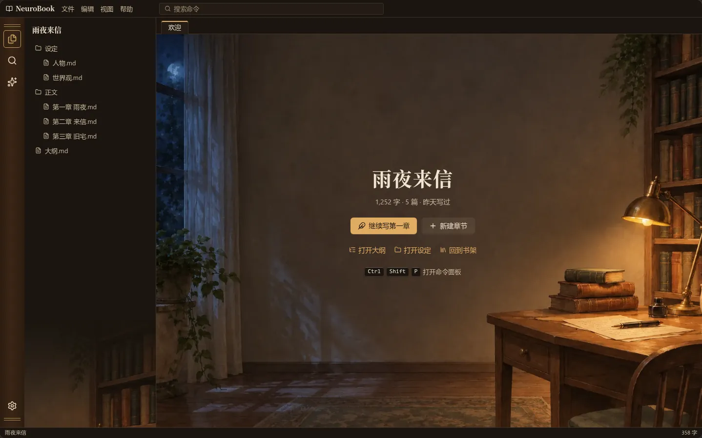
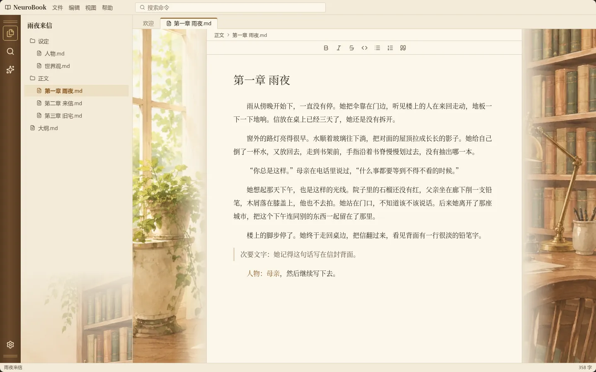
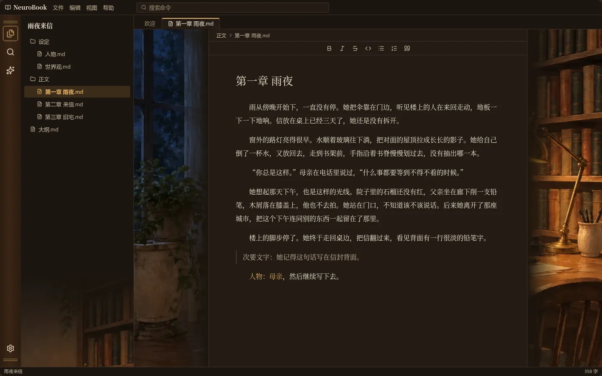
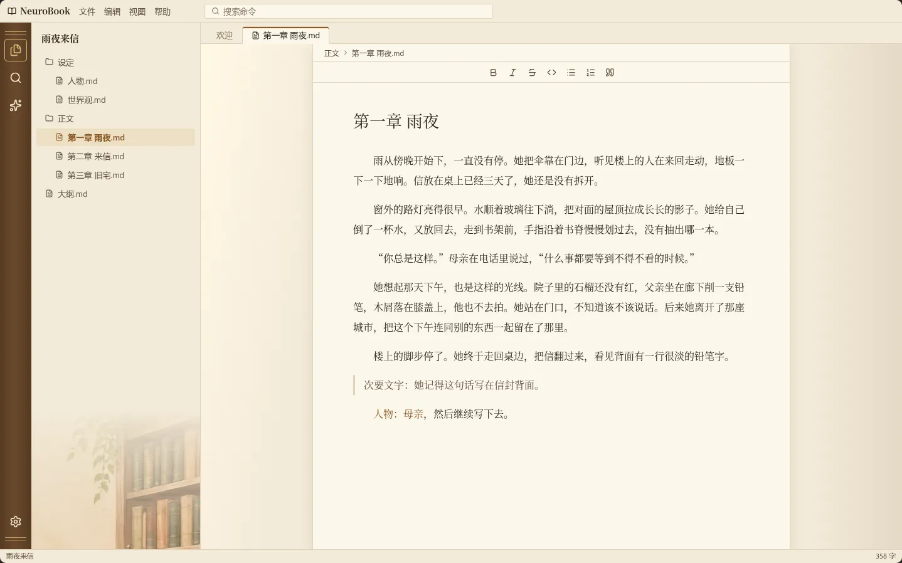
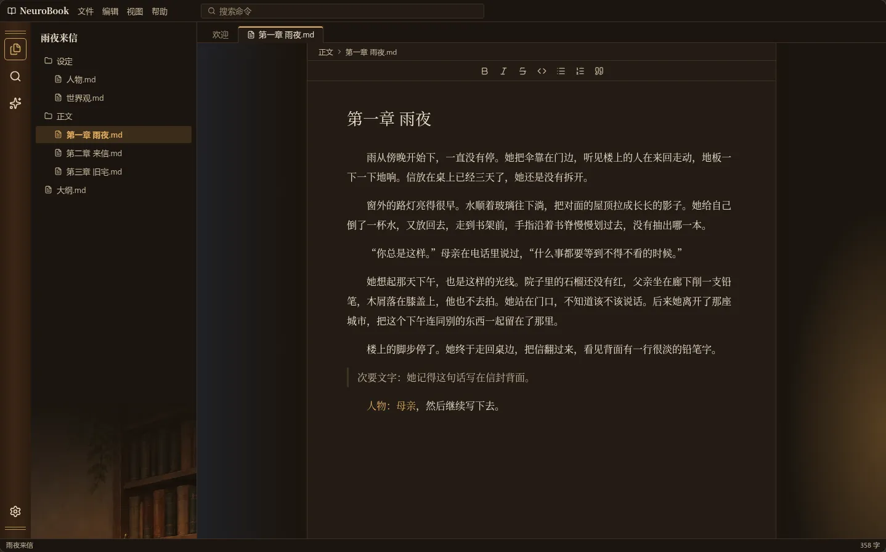

主题皮肤：书房（第 1 轮）
整套换皮肤的第一张静态稿：没有角色，亮色白天窗边，暗色夜晚台灯。正文底下始终是干净的纸，不靠半透明磨砂。
这一轮只看观感。素材是图片生成的草稿，定稿前不算数；界面是草稿搭的，尺寸和产品大致一致，但不是真实工作台。
皮肤换掉的不止背景：配色、活动栏（做成书脊）、标签条、标题字体、侧栏下角。菜单、设置窗口、图标集这一轮还没有做。
打开作品、还没开文件时，这个方向对吗 待定

方向对，继续细化
方向对，但要改（写在留言里）
不对，换个思路
推荐：方向对。场景占满内容区，文字落在墙面的留白上，一眼能认出是哪套皮肤，也没有压暗或磨砂。
写作时，正文两侧放什么 待定
A：两侧露出场景
左边窗与植物，右边书架与台灯，往正文方向淡出。皮肤感强；窗口窄到放不下时两侧自然消失。


B：两侧只有光
没有图，白天是窗边来的亮光，夜里是台灯的暖光；只有侧栏下角留一点书架。最安静，但和普通主题的差别小。


推荐：A。你要的是整套换皮肤，B 看起来只是换了配色。A 的风险是长时间写作时两侧抢眼，定稿时可以把图做得更淡，这一轮先看有没有那个感觉。
还有什么想说的
比如书脊活动栏、标题字体、侧栏下角的书架，哪里喜欢、哪里别扭。